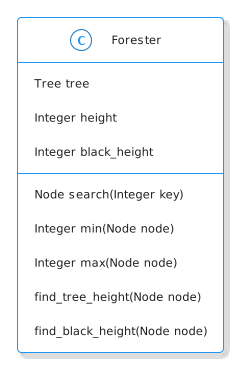

Red-Black Trees: Querying
Table of Contents

The Imports
from bowling.data_structures.red_black_tree import tree as rb_tree
The Forester
This is the class to hold the tree and answer questions about it. Most of the methods (except for the red-black-height) are the same as the Binary Search Tree with the main exception being that we need to use the NIL object instead of None. This means that nothing in the tree module can use the Forester directly or we'll end up with a circular reference.
class Forester:
"""The forester manages the tree
Args:
tree: tree to manage
enforce_properties: check that the black-heights are the same
"""
def __init__(self, tree: rb_tree.RedBlackTree=None,
enforce_properties: bool=False) -> None:
self.tree = tree
self.enforce_properties = enforce_properties
return
Search
The first thing we'll look at is searching for a Node in a Binary Search Tree. Because of the way the tree is structured the search looks a lot like a Binary Search where we start at the root of the tree and then work our way downwards, picking the next child to follow based on whether the key we're searching for is greater than the right child's key or less than the left child's key. If it's equal then we've found the node we want.
The Implementation
I'll add the iterative version of the Tree Search as a method for our Query class.
def search(self, key) -> rb_tree.Node:
"""Searches the tree for the node with the matching key
Args:
key: node's key to search for
Returns:
the node with the key or None if it isn't in the tree
"""
node = self.tree.root
while node is not rb_tree.LEAF and key != node.key:
if key < node.key:
node = node.left
else:
node = node.right
return node
Testing
# pypi
from expects import be, be_none, equal, expect
from bowling.data_structures.red_black_tree import tree as rb_tree
from bowling.data_structures.red_black_tree.forester import Forester
root = rb_tree.Node(10)
tree = rb_tree.RedBlackTree(root)
query = Forester(tree)
output = query.search(5)
expect(output).to(be(rb_tree.NIL))
expect(query.search(10)).to(equal(root))
five = rb_tree.Node(5)
root.left = five
expect(query.search(5)).to(be(five))
root.right = fifteen = rb_tree.Node(15)
expect(query.search(15)).to(be(fifteen))
Miminum and Maximum
Mimimum
def min(self, node: rb_tree.Node=None) -> rb_tree.Node:
"""Returns the node with the smallest key
Args:
node: a node to use as the starting root
"""
if node is None:
node = self.tree.root
while node.left is not rb_tree.LEAF:
node = node.left
return node
Testing
root = rb_tree.Node(10)
tree = rb_tree.RedBlackTree(root)
query = Forester(tree)
root.left = rb_tree.Node(5)
root.left.left = rb_tree.Node(2)
root.right = rb_tree.Node(15)
root.right.right = rb_tree.Node(17)
root.right.left = rb_tree.Node(11)
expect(query.min()).to(equal(rb_tree.Node(2)))
root.left.left.left = rb_tree.Node(1)
expect(query.min()).to(equal(rb_tree.Node(1)))
expect(query.min(tree.root.right)).to(equal(rb_tree.Node(11)))
Maximum
def max(self, root: rb_tree.Node=None) -> rb_tree.Node:
"""Returns the node with the largest key
Args:
root: subtree root to start at
Returns:
node with the largest key in tree/subtree
"""
if root is None:
root = self.tree.root
while root.right is not rb_tree.LEAF:
root = root.right
return root
Testing
root = rb_tree.Node(10)
tree = rb_tree.RedBlackTree(root)
query = Forester(tree)
root.left = rb_tree.Node(5)
root.left.left = rb_tree.Node(2)
root.right = rb_tree.Node(15)
expect(query.max()).to(equal(rb_tree.Node(15)))
root.right.right = rb_tree.Node(17)
expect(query.max()).to(equal(rb_tree.Node(17)))
expect(query.min()).to(equal(rb_tree.Node(2)))
expect(query.max(tree.root.left)).to(equal(rb_tree.Node(5)))
Height
The height of the Binary Search Tree is the number of edges from the root of the tree to the furthest node. The algorithms we're looking at here don't use them but I'm going to use height to look at how the order you insert nodes in the tree affects the height.
@property
def height(self) -> int:
"""The length of the longest path starting at the root
Returns:
number of edges from root to furthest leaf
"""
return self.tree_height(self.tree.root)
def tree_height(self, node: rb_tree.Node=None) -> int:
"""The length of the longest path starting at the node
Args:
the node to start the measurement from
Returns:
number of edges from root to furthest leaf
"""
if node is rb_tree.LEAF:
return -1
left = self.tree_height(node.left) + 1
right = self.tree_height(node.right) + 1
return max(left, right)
tree = rb_tree.RedBlackTree()
query = Forester(tree)
expect(query.height).to(equal(-1))
root = rb_tree.Node(10)
tree.root = root
expect(query.height).to(equal(0))
root.left = rb_tree.Node(8)
expect(query.height).to(equal(1))
root.right = rb_tree.Node(12)
expect(query.height).to(equal(1))
root.left.left = rb_tree.Node(4)
expect(query.height).to(equal(2))
root.left.left.left = rb_tree.Node(2)
expect(query.height).to(equal(3))
Black Height
@property
def black_height(self) -> int:
"""The number of black nodes below the root
"""
return self.find_black_height(self.tree.root)
def find_black_height(self, node: rb_tree.Node=None) -> int:
"""Find the number of black nodes below a node
Note:
This assumes that the starting node is black. In the cases where it's red
it will be one more than the true height
Args:
node: base node to use
"""
if node is rb_tree.LEAF:
return 0
add_for_color = 1 if node.is_black else 0
left = self.find_black_height(node.left) + add_for_color
right = self.find_black_height(node.right) + add_for_color
if self.enforce_properties:
assert left == right, f"Black Height: Left={left} Right={right}"
return max((left, right))
Testing
tree = rb_tree.RedBlackTree()
forester = Forester(tree)
root = rb_tree.Node(26, color=rb_tree.Color.BLACK)
tree.root = root
expect(forester.black_height).to(equal(1))
root.left = rb_tree.Node(17, color=rb_tree.Color.RED)
expect(forester.black_height).to(equal(1))
root.left.left = rb_tree.Node(14, color=rb_tree.Color.BLACK)
expect(forester.black_height).to(equal(2))
root.left.left.left = rb_tree.Node(10, color=rb_tree.Color.RED)
expect(forester.black_height).to(equal(2))
root.left.left.right = rb_tree.Node(16, color=rb_tree.Color.BLACK)
expect(forester.black_height).to(equal(3))
Testing
from bowling.data_structures.red_black_tree.tree import Node, RedBlackTree
from bowling.data_structures.red_black_tree.arborist import Arborist
from bowling.data_structures.red_black_tree.forester import Forester